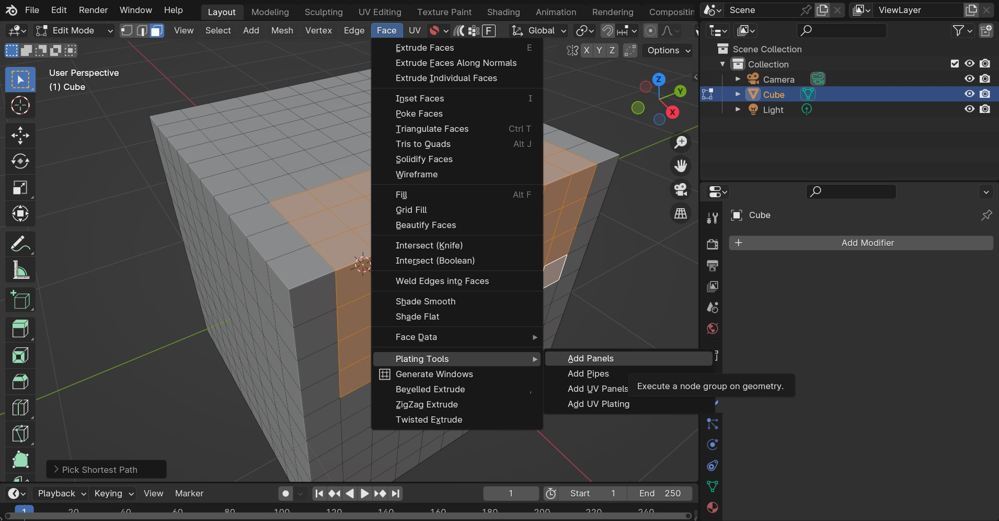

Modifiers and Tools
Warning
Blender 4 only!
Captured in realtime, the modifiers can out perform standard python code.
The Plating Generator comes with a set of Blender 4.0 Modifiers and Tools that add panelling effects and greebles on top of the base mesh in a non-destructive way. These are completely separate to the other Plating Generator workflows.
Installing the Assets

The modifiers are added as Assets in the Preferences menu.
The modifiers and tools are added as Blender Assets:
Locate the zip file plating_generator_modifier_assets.unzip.me.zip on your computer.
Right-click on the file and choose “Extract All” or a similar option. This will unzip the contents into a folder.
In Blender, go to
Edit>Preferencesin the top menu.In the Preferences window, click on the “File Paths” section.
Within File Paths, find the “Asset Libraries” section.
Click the “+” button to create a new library entry.
A file browser will open. Navigate to where you extracted the zip file.
Select the folder that contains the assets.
Click “Add Asset Library”.
In the Asset Libraries section, name your new asset library for easy identification.
Click the “Save Preferences” button to save your changes.
Restart Blender.
Using the Modifiers and Tools
Using the Modifiers
To add any one of the modifiers:
Once the assets are installed, select the object you wish to add a Modifier to.
Under the Modifiers side tab, access the Plating Generator modifiers by selecting the Plating Generator sub menu.
The Panelling modifier being added. Note the cube has been subdivided to add faces the modifier can work with.
Once the modifier is added, you can use it like a regular Blender modifier. See the Modifiers and Tools list below. Parameters are documented as tooltips on each of the individual inputs.
Tip

A Bevel modifier can be added to highlight the Panelling effect.
If the Bevel modifier is set to Weight mode, any weight controls set in the Plating Generator modifier will be used.
Using the Tools
The same modifiers can be used as Tools when selecting faces in Edit mode:
Once the assets are installed, select the object and enter Edit mode by pressing the tab key. Press 3 to enter Face mode, or click the small rectangular icon at the top of the viewport:
Select some faces you wish to add an effect to:
Go to the Face menu at the top of the viewport and and select the Plating Tools sub-menu:
Select one of the tools and expand the panel that appears in the bottom-right of the viewport. This will be where you can control the parameters for each tool:
Warning
Once the parameter menu is clicked away from, the tool will have finished. If it was the last action you performed, try pressing the F9 key to return to the menu. Otherwise, a Blender tool is a one-time operation.
See the Modifiers and Tools list below for a list of the different modifiers/tools.
Modifiers and Tools list
There are different modifiers and tools to choose from. Parameters are documented as tooltips on each of the individual inputs:
Panelling

The default Panelling modifier, controlled by a random seed number. The Point Factor parameter randomly selects faces on the object, and then expands the selection based on the Point Size.
This effect is then repeated multiple times using the Point Layers parameter. Then, this pattern is cutout to create the panelling effect.
This animation shows how the pattern is created so you can adjust it for different meshes:

UV Panelling

Warning
A UV Map is Required
A base panelling effect that uses a combination of big, medium and small panels controlled by a UV Map and a random seed number.
UV Plating

Warning
A UV Map is Required
A more customizable version of the UV Panelling modifier, allowing you to set materials and heights for different size panels. Optional notches are added to the sides for greater detail.
Greebles
The greebles modifier set to a density of 5000.
A modifier that adds random objects to the surface. A default collection of objects is imported, which can be changed to a different collection on the modifier settings.
Note
Disappearing Greebles
This can happen when you apply the Greebles modifier. To fix this, tick the Realize Instances option on the modifier before applying it. This will take up more memory but should keep the Greebles when you apply the modifier.
Pipes

A modifier that creates a simple random piping pattern.
Tip
Combining modifiers

You can combine different modifiers together and use Attributes set by the modifiers to change where they are applied. Here a Plating Modifier has been added first, and then a Greeble Modifier has then been added. The Selection parameter has then been changed so the greebles only appear on the Small Panels.
This is by using the Small Panels attribute that has been set by the Plating modifier:
Using the Nodes
Hidden behind each modifier is a set of node groups that can be used inside a Geometry Nodes set up. These node groups can be loaded into a Blender scene and then used in combination with any other nodes.
To add the nodes for use:
Once the assets are installed, Go to the Geometry Nodes editing tab.
Add a Geometry Nodes modifier to the object if there is not one already.

Click “New” to add a new Geometry Nodes tree to the modifier.

In the nodes editor view, press shift-A and search for one of the following modifier nodes:
Panels Modifier Nodes
Plating Modifier Nodes
Greebles Modifier Nodes
…Any other nodes groups with similar names may be sub-node groups and are less useful.
You can then use the node in the same way as the modifier:

Tip
Remember to add a UV Map when needed (e.g. from a Named Attribute node - see screenshot) to the Vector input to supply a UV Map to the node. Otherwise, nothing will be displayed.
Also make sure the mesh has enough face subdivisions to see a result (as seen in the screenshot)
Adjust parameters (e.g. height) on the node to check it is working.
Creating Grid shaped UV Maps
Some of the panel modifiers specifically require a grid shaped UV Map for them to work, otherwise nothing will be displayed. You can use the UV Squares add-on to achieve this or by using the Follow Active Quads method. Remember, you can add more than one UV Map to an object in Blender’s Object Data Properties tab if you already have a UV Map you wish to keep.

The ideal UV Map is made up of a square grid for the pattern to work well. Here, the UV Squares add-on is used to make the UV faces square.
Remember you can create more than one UV map under the Object Data Properties tab.
Having issues with the modifiers or nodes?
Don’t hesitate to Get in touch